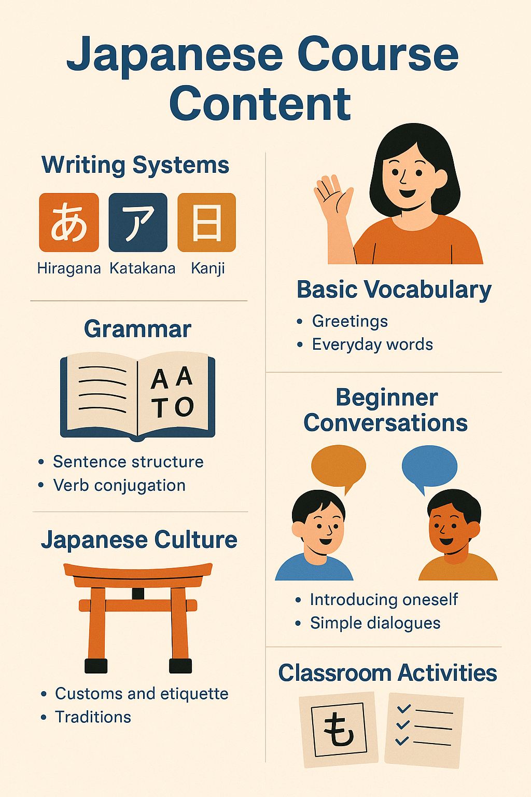

ภาษาญี่ปุ่นมีระบบตัวอักษร 3 แบบ ดังนี้:
• ฮิรางานะ (Hiragana)
ตัวอักษรพื้นฐานสำหรับเขียนคำศัพท์ญี่ปุ่นและคำช่วย เช่น ありがとう (ขอบคุณ)• คาตาคานะ (Katakana)
ใช้เขียนคำทับศัพท์จากภาษาต่างประเทศ เช่น コンピューター (คอมพิวเตอร์)• คันจิ (Kanji)
ตัวอักษรจีนที่ใช้แทนความหมาย เช่น 山 (ภูเขา), 水 (น้ำ) มีหลายพันตัว และเป็นส่วนที่ท้าทายที่สุดในการเรียนภาษาญี่ปุ่น การอ่านเขียนภาษาญี่ปุ่น ต้องฝึกให้รู้จักและเขียนตัวอักษรทั้งสามแบบอย่างถูกต้อง พร้อมจดจำวิธีการอ่านที่แตกต่างกันไปตามบริบท 